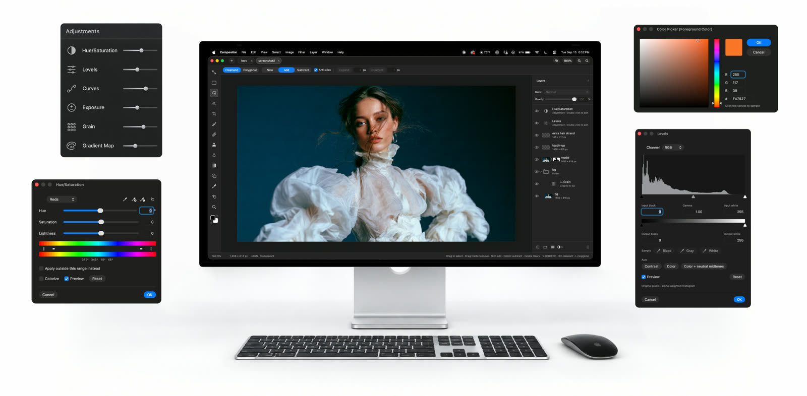
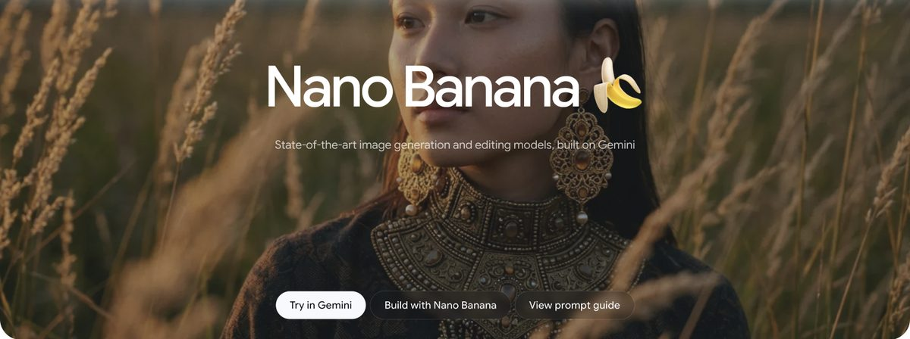
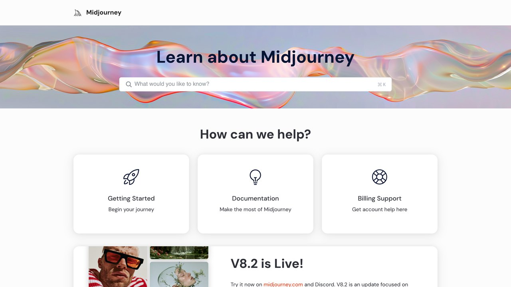

Cómo generar imágenes con IA: Gemini, Midjourney y ChatGPT comparados
Los tres modelos que de verdad se usan en 2026, cuándo elegir cada uno, cómo escribir un prompt visual que funcione a la primera y los límites de derechos de autor que casi nadie te explica antes de publicar nada.
Hace tres años, generar una imagen con IA significaba una jornada de prueba y error para conseguir algo que no pareciera tener seis dedos. Hoy, los modelos de referencia —Gemini (con su motor de imagen, conocido informalmente como "Nano Banana"), Midjourney y el generador integrado en ChatGPT— producen resultados publicables a la primera en la mayoría de los casos, sin curva de aprendizaje técnica. El salto de calidad no es marketing: es medible en cosas tan concretas como manos correctas, texto legible dentro de la imagen y coherencia entre varias generaciones del mismo personaje.
Esta guía no es una lista de "10 prompts mágicos". Es una comparación honesta de cuándo conviene cada herramienta, cómo escribir instrucciones que reduzcan la aleatoriedad, y —lo que casi ninguna guía de este tema menciona— qué puedes y qué no puedes hacer legalmente con lo que generas.
No hace falta elegir una única herramienta para siempre: en la práctica, muchos equipos usan Gemini o ChatGPT para iterar rápido durante el trabajo diario porque ya están dentro del mismo chat donde redactan textos, y reservan Midjourney para la pieza final cuando el acabado estético importa más que la velocidad. Verás ambos enfoques reflejados en los ejemplos de esta guía.
Compositor: un editor tipo Photoshop, gratis y de código abierto

Compositor es un editor de imágenes para Mac creado por Robbie Tilton, que lo hizo porque Photoshop le parecía caro y GIMP poco familiar. Es gratis, de código abierto (licencia MIT) y está pensado para el mismo flujo de trabajo: capas y carpetas, máscaras, modos de fusión, capas de ajuste (curvas, niveles, tono y saturación…), selección de sujeto, quitar fondo, relleno según el contenido, pincel corrector, tampón de clonar y un filtro tipo Camera Raw. Además abre archivos PSD y PSB de Photoshop en RGB de 8 bits y respeta los atajos de teclado de Photoshop. Salió en septiembre de 2026 y en menos de un mes superó las 15.000 estrellas en GitHub.
Dónde conseguirlo: robbietilton/Compositor · repositorio oficial ↗ · web del autor ↗ · descargar el .dmg ↗
Con Homebrew (un comando):
brew install --cask robbietilton-compositor
Antes de bajarlo: solo funciona en Mac con chip de Apple (M1 o posterior) y macOS 26 o superior; en Windows, Linux o en un Mac con Intel no se puede usar. Por ahora la interfaz está solo en inglés. Al abrir un PSD complejo, algunos elementos (vectores, texto vertical, archivos CMYK) se convierten en píxeles o no se admiten, y la app te enseña un informe antes de aplicar nada. Como referencia, Photoshop cuesta 26,43 € al mes en España (plan anual con pago mensual, IVA incluido, según la web de Adobe en octubre de 2026).
Si no tienes Mac: Photopea ↗ funciona en el navegador, abre PSD y es gratis con anuncios, y GIMP ↗ es gratis y de código abierto en Windows y Linux.
Photoshop y Adobe son marcas de Adobe Inc.; Compositor no tiene relación con Adobe.
Restaurar y colorear fotos antiguas gratis
Si vienes del reel, estos son los dos pasos. Las dos herramientas son gratis y no piden cuenta. Primero restaura y después colorea.
-
1
CodeFormer: recupera la cara
Sube la foto escaneada, deja marcadas las tres casillas y pon «Rescaling» en 2. El valor «Fidelity» va de 0 (más nitidez) a 1 (más parecido al original): entre 0,5 y 0,7 suele quedar natural. Descarga el resultado enseguida, porque la web lo borra al poco.
Dónde: CodeFormer en Hugging Face ↗
-
2
Photo Colorization: le da color
Sube la foto ya restaurada (PNG o JPG de hasta 10 MB). Tarda unos 20 segundos.
Ojo: los colores son una suposición del modelo, no los reales, así que no sirve como documento histórico. Además, estas webs suben la foto a un servidor: no subas fotos de otras personas sin su permiso.
Trucos: escanea la foto o fotografíala con luz lateral suave y sin reflejos, y recórtala antes de subirla. Si tienes cuenta de Google, Gemini también restaura y colorea en un solo paso.
Cómo funcionan estos modelos, sin fórmulas
La mayoría de generadores de imagen actuales funcionan por difusión: el modelo aprende a partir de millones de pares imagen-descripción, y al generar parte de una imagen compuesta enteramente de ruido visual, que va "limpiando" en pasos sucesivos hasta que el resultado se ajusta a tu descripción de texto. No dibuja de arriba a abajo como haría una persona; refina el lienzo entero en cada paso, lo que explica por qué a veces el rostro cambia ligeramente entre una versión y la siguiente incluso con el mismo prompt. Este proceso ocurre en segundos porque el "limpiado" no parte literalmente de estática de televisión: parte de una representación matemática comprimida de esa estática, sobre la que el modelo trabaja de forma mucho más eficiente que si procesara cada píxel por separado.
Gemini y ChatGPT usan una variante más reciente: en lugar de solo difusión pura, apoyan la generación en un modelo de lenguaje que entiende mejor el prompt completo antes de generar, lo que mejora sobre todo la composición de escenas complejas (varios objetos con relaciones espaciales concretas, texto dentro de carteles, instrucciones de edición sobre una imagen ya existente). Midjourney sigue apostando por un motor de difusión más puro, optimizado durante años para un acabado estético reconocible antes que para seguir instrucciones al pie de la letra.
Para no perderte: si necesitas que la imagen siga instrucciones concretas (texto exacto, composición precisa, varias ediciones seguidas sobre el mismo archivo), prioriza Gemini o ChatGPT. Si buscas un acabado estético muy pulido sin control fino sobre los detalles, Midjourney sigue siendo el más fuerte del grupo.
Una segunda diferencia técnica importa más de lo que parece a primera vista: la resolución nativa de generación. Ninguno de los tres modelos genera directamente en alta resolución de imprenta; todos parten de un lienzo relativamente modesto (del orden de uno a dos megapíxeles) y aplican después un paso de escalado que rellena detalle sin inventar contenido nuevo. Para redes sociales o web esto es indistinguible de una imagen nativa en alta resolución; para imprimir un cartel de gran formato, conviene generar varias variantes y quedarte con la que mejor escala, en vez de asumir que cualquier salida sirve para cualquier tamaño final.
También conviene entender qué significa "editar" una imagen con estos modelos, porque no es edición de píxeles como en un programa tradicional. Cuando le pides a Gemini o ChatGPT que "quite el coche del fondo" de una foto que subiste, el modelo no borra y rellena de forma quirúrgica: vuelve a generar la imagen completa manteniendo el resto lo más parecido posible al original. El resultado suele ser convincente, pero elementos que no mencionaste explícitamente (un reflejo, una sombra, un detalle de textura) pueden cambiar ligeramente sin que lo hayas pedido. Si necesitas edición de precisión píxel a píxel, sigue siendo terreno de herramientas tradicionales como Photoshop, no de generación por IA.
Las tres herramientas, comparadas de frente
Antes de la tabla, una imagen real generada con el motor de Gemini (el que la comunidad apoda "Nano Banana") para que veas el nivel de detalle actual sin que te lo describamos con adjetivos:

| Herramienta | Punto fuerte | Punto débil | Mejor para |
|---|---|---|---|
| Gemini (Nano Banana) | Sigue instrucciones complejas y edita imágenes ya existentes conservando la coherencia del sujeto | Estilo por defecto algo más "correcto" y menos distintivo que Midjourney | Mockups, ediciones iterativas, texto dentro de la imagen |
| Midjourney | Acabado estético y composición artística sin igual | Menos control fino sobre texto exacto o instrucciones muy literales | Ilustración, portadas, moodboards, arte conceptual |
| ChatGPT (imagen) | Integrado en la misma conversación donde ya defines contexto y texto | Menos opciones de estilo específico que Midjourney | Diagramas, memes internos, iteración rápida sin cambiar de app |
Los tres tienen planes gratuitos con límites diarios o mensuales de generación, suficientes para probar cuál encaja con tu flujo antes de pagar nada. Ninguno requiere tarjeta de crédito para el nivel gratuito.
Vale la pena mencionar un cuarto nombre que aparece constantemente en comparativas de 2026: los modelos de código abierto de la familia Stable Diffusion y sus derivados (como Flux). No los incluimos en la tabla principal porque su curva de entrada es distinta: requieren o bien ejecutar el modelo en tu propio hardware (una tarjeta gráfica con suficiente memoria) o pagar por un servicio de terceros que lo aloje, mientras que Gemini, Midjourney y ChatGPT funcionan directamente desde el navegador sin instalar nada. Su ventaja real es el control total sobre el modelo y la ausencia de límites de generación una vez montado, algo que interesa sobre todo a equipos técnicos con volumen alto y necesidad de personalizar el modelo con sus propios datos — un caso de uso distinto al de esta guía, pensada para quien quiere resultados ya, sin montar infraestructura.
Cómo escribir un prompt de imagen que funcione
Los mismos principios de especificidad que funcionan para texto (ver nuestra guía sobre cómo escribir prompts) se trasladan aquí, pero con vocabulario propio del medio visual. Cuatro elementos marcan la diferencia entre un resultado genérico y uno útil:
- Sujeto y acción concretos: "una taza de café humeante sobre una mesa de madera junto a una ventana con luz de mañana" da mucho mejor resultado que "una imagen bonita de café".
- Estilo o medio explícito: fotografía, ilustración vectorial plana, acuarela, render 3D. Sin esta palabra, el modelo elige por ti y el resultado varía mucho entre generaciones.
- Encuadre y composición: plano general, primer plano, vista cenital. Términos de fotografía real funcionan porque el modelo se entrenó también con ese vocabulario técnico.
- Paleta o iluminación: "luz dorada de atardecer", "paleta fría azul y gris", "alto contraste". Fijar esto reduce la aleatoriedad de color entre intentos.
Para texto dentro de la imagen (un cartel, un logo, una etiqueta), escribe la frase exacta entre comillas dentro del prompt: un cartel de madera que dice "ABIERTO" funciona notablemente mejor que describir el cartel sin citar el texto literal. Gemini y ChatGPT aciertan el texto la mayoría de las veces si es corto (una o dos palabras); frases largas siguen siendo el punto donde más fallan los tres modelos.
"Una oficina moderna"
Resultado genérico: una sala de reuniones cualquiera, estilo y color decididos al azar por el modelo, distinto cada vez que repites el prompt.
"Fotografía de una oficina minimalista escandinava, mesas de madera clara, plantas verdes, luz natural cenital, plano general, paleta de colores cálidos neutros"
Resultado consistente entre intentos: estilo, iluminación, encuadre y paleta ya no dependen del azar del modelo, sino de lo que especificaste.
CUANDO EL RESULTADO NO SALE BIEN A LA PRIMERA
No reescribas el prompt entero desde cero. Los tres modelos permiten iterar sobre la imagen generada ("quita el reflejo del cristal", "cambia la hora del día a de noche", "aleja la cámara"). Esa iteración dirigida suele llegar al resultado deseado en dos o tres pasos, igual que ocurre iterando sobre texto.

Variaciones, semillas y por qué el mismo prompt no da siempre lo mismo
Cada generación parte de un punto de partida aleatorio (la "semilla") que determina buena parte del resultado final antes incluso de leer tu prompt. Por eso el mismo texto exacto produce imágenes distintas cada vez: no es un fallo, es el mecanismo diseñado para que puedas generar variedad sin reescribir nada. Cuando encuentres una variante que te convence pero quieres ajustar solo un detalle (el color de una prenda, la posición de un objeto), la mayoría de interfaces permiten fijar esa semilla concreta y pedir un cambio puntual sobre ella, en vez de dejar que todo vuelva a variar al azar.
Esto tiene una implicación práctica para el trabajo en equipo: si necesitas que un compañero reproduzca exactamente la misma imagen que tú generaste, no basta con pasarle el texto del prompt — necesitas también la semilla concreta, cuando la interfaz la expone, o simplemente compartir el archivo generado en vez de pedir que lo regenere desde cero.
Otra técnica útil es el prompt negativo: decirle al modelo explícitamente qué evitar, no solo qué incluir. "Sin texto, sin marcas de agua, sin manos visibles" reduce la probabilidad de que aparezcan justo los elementos donde el modelo suele fallar, en vez de generar la imagen y descartar después las que no sirven. No todas las interfaces exponen este control de forma directa —Midjourney sí, con el parámetro --no; Gemini y ChatGPT lo interpretan mejor si lo incluyes como parte de la frase normal ("sin que se vean las manos")— pero el principio de especificar negativos, no solo positivos, funciona en los tres.
Casos de uso prácticos, más allá de la curiosidad
Más allá de generar una imagen suelta para probar, estos son los usos donde la generación de imágenes ahorra tiempo real de forma repetida, no solo la primera vez que la pruebas:
Generar cinco o seis variaciones de una misma miniatura con distinto encuadre o expresión y probarlas directamente en la plataforma de vídeo, sin depender de un banco de fotos con licencia ni de encargar un diseño nuevo por cada prueba de rendimiento.
Visualizar cómo quedaría un envase, una etiqueta o un producto físico antes de encargar un prototipo real, para validar internamente una idea o enseñársela a un cliente sin comprometer presupuesto de fabricación todavía.
Imágenes de apoyo para una presentación o un post de blog cuando el presupuesto no llega a un banco de imágenes de pago ni a un ilustrador.
Bocetar cómo podría verse una interfaz, un personaje o un escenario antes de encargar el trabajo final a un profesional.
Derechos de autor y cuándo NO usar imágenes generadas
Esta es la parte que la mayoría de tutoriales se saltan. En España y la Unión Europea, una imagen generada íntegramente por IA sin intervención creativa humana sustancial no está protegida por derechos de autor: no hay un "autor" humano al que atribuir la obra, así que cualquiera podría, en teoría, reutilizarla también. Si necesitas exclusividad legal sobre una imagen (un logo de marca, una ilustración que quieres registrar), la generación por IA por sí sola no te la da.
El segundo problema es el contrario: generar una imagen "al estilo de" un ilustrador o estudio concreto y vivo es un terreno legal todavía en disputa en varios países, y varias demandas activas en 2026 giran exactamente en torno a esto. Evita pedir explícitamente el estilo de un artista identificable con nombre y apellido si la imagen va a un uso comercial.
Si operas desde la Unión Europea, hay un tercer punto que no es opcional: el Reglamento de IA (AI Act) obliga a etiquetar como generado o manipulado por IA cualquier contenido sintético que pueda confundirse con contenido real, en particular imágenes de personas ("deepfakes") destinadas al público general. Esto no significa que tengas que poner un sello visible en cada miniatura de blog, pero sí que la marca de agua o metadato de procedencia (el estándar C2PA que mencionamos más abajo) no debe eliminarse deliberadamente cuando el contenido pueda confundir a quien lo vea sobre su naturaleza real. La obligación recae sobre todo en usos que simulan personas reales o eventos que no ocurrieron, no en ilustraciones o mockups genéricos.
USO RAZONABLE
- Miniaturas, mockups internos y material de apoyo no destinado a registro de marca.
- Ilustraciones genéricas para un blog o una presentación.
- Prototipos visuales que luego encarga a un profesional para la versión final.
RIESGO REAL
- Un logo o identidad de marca que necesitas registrar en exclusiva.
- Imitar el estilo reconocible de un artista vivo con fines comerciales.
- Generar el rostro de una persona real sin su consentimiento, incluso en tono de broma.
La regla práctica que aplicamos en esta redacción es simple: si la imagen va a acompañar un texto explicativo y queda claro por contexto que es una ilustración, el riesgo es bajo. Si la imagen se presenta como si fuera una fotografía real de un evento, un producto o una persona concreta sin aclararlo, el riesgo —legal y de credibilidad— sube de golpe, incluso si la intención original era inofensiva.